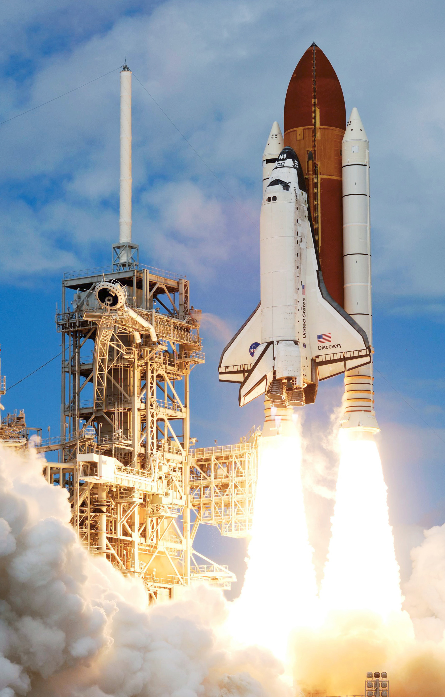
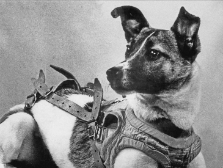
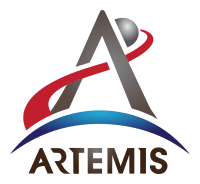

Space Shuttle
Crewed orbital launch and reentry
1981-2011

The Space Shuttle is a retired, partially reusable low Earth
orbital spacecraft system operated from 1981 to 2011 by the
U.S.Five complete Space Shuttle orbiter vehicles were built
and flown on a total of 135 missions from 1981 to 2011. They
launched from the Kennedy Space Center (KSC) in Florida.
Operational missions launched numerous satellites,
interplanetary probes, and the Hubble Space Telescope (HST),
conducted science experiments in orbit, participated in the
Shuttle-Mir program with Russia, and participated in the
construction and servicing of the International Space
Station (ISS).
Laika
First animal to orbit the Earth
Flight 1957

Laika c. 1954 – 3 November 1957) was a Soviet space dog who
was one of the first animals in space and the first to orbit
the Earth. A stray mongrel from the streets of Moscow, she
flew aboard the Sputnik 2 spacecraft, launched into low
orbit on 3 November 1957. As the technology to re-enter the
atmosphere had not yet been developed, Laika's survival was
never expected. She died of hyperthermia hours into the
flight, on the craft's fourth orbit.
Artemis program
Program to go back to the moon

The Artemis program is a Moon exploration program led by the
US NASA, formally established in 2017 via Space Policy
Directive 1. It is intended to reestablish a human presence
on the Moon for the first time since the Apollo 17 mission
in 1972. The program's stated long-term goal is to establish
a permanent base on the Moon to facilitate human missions to
Mars. Two principal elements of the Artemis program are
derived from the now-cancelled Constellation program: the
Orion spacecraft and the Space Launch System. Other elements
of the program, such as the Lunar Gateway space station and
the Human Landing System, are in development by government
space agencies and private spaceflight companies,
collaborations bound by the Artemis Accords and governmental
contracts.